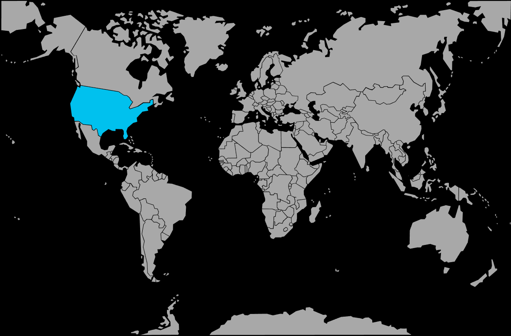

Systématique
- Ordre : Cyprinodontiformes
- Famille : Poeciliidae
- Genre : Heterandria
- Espèce : Heterandria formosa
Heterandria formosa est l’un des plus petits poissons vivipares connus, au corps très fin et allongé, avec une silhouette de micro‑poisson de surface.
Les femelles atteignent environ 2–3 cm, les mâles restant un peu plus petits; l’espèce est donc particulièrement adaptée aux nano‑bacs plantés bien stabilisés.
Les poissons forment de petits groupes lâches qui se tiennent dans la végétation fine, en zone superficielle et médiane, explorant calmement le décor; leur très petite taille les rend vulnérables face à des colocataires plus grands ou vifs.
C’est une espèce paisible mais discrète, qui s’épanouit dans des bacs très plantés, riches en mousses, plantes flottantes et microfaune; elle ne doit être associée qu’à des espèces extrêmement calmes et de gabarit comparable.
Reproduction : vivipare; la femelle produit de très petites portées mais en quasi continu, ce qui donne une présence fréquente d’alevins de tailles variées dans le bac.
Dans un aquarium bien planté sans gros prédateurs, une partie des jeunes survit facilement sans intervention, grâce aux refuges offerts par les mousses et les plantes denses.
Dimorphisme sexuel : femelles plus grandes et plus rondes; mâles plus fins, munis d’un gonopodium bien visible, parfois légèrement plus contrastés.
Biotope : fossés, marais, ruisseaux et petites rivières très plantées ou bordées de végétation rivulaire, avec faible courant et abondance de microfaune.
Répartition
Origine naturelle :
- Sud‑Est des États‑Unis, de la Caroline du Sud à la Floride et jusqu’à la Louisiane, avec quelques populations plus à l’ouest.
- Fossés, marécages, bras morts, bords de ruisseaux et lacs peu profonds fortement végétalisés.
Les eaux sont lentes à quasi stagnantes, souvent un peu teintées et riches en matière organique, avec de fortes variations saisonnières de niveau et de température.
En aquarium, un décor très planté, des feuilles mortes et des refuges fins, combinés à un courant quasi nul, reproduisent bien ce type de milieu.
Paramètres de maintenance
Température : 18 à 26 °C, avec une préférence pour 20–24 °C en maintenance longue durée.
pH : 6,5 à 7,8, de légèrement acide à légèrement basique.
GH : 5 à 15 °dGH, supporte une dureté modérée adaptée à la plupart des eaux du robinet légèrement minéralisées.
Courant : très faible; un simple mouvement de surface suffit, l’espèce étant adaptée aux eaux calmes voire stagnantes.
Volume conseillé : à partir de 30–40 L pour un bon groupe, un volume supérieur apportant plus de stabilité et de microfaune.
Régime alimentaire
Régime : micro‑omnivore à forte tendance insectivore; consomme de très petites proies (microvers, nauplies d’artémias, micro‑plancton, larves de moustiques) ainsi que des aliments secs finement broyés.
Des distributions fréquentes de petites quantités de nourriture vivante ou congelée de petite taille, combinées à des aliments secs adaptés, favorisent une bonne croissance et une reproduction continue.